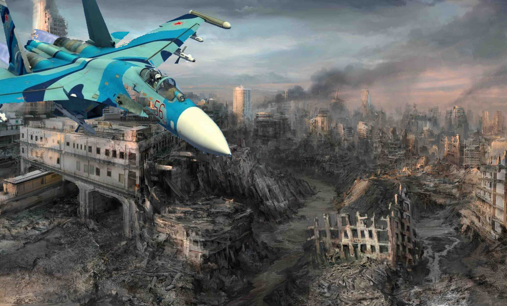

glav
back
Бомбардировка Териполиля
Луганск 20 уже на фронте и он успешно поражает врага!
Сегодня с 2:37 по 5:43 бомбил Терипопиль. Он уничтожил в пух и прах тре радиостанции, заминировал пять балконов где прячтались вражеские солдаты, и разгромил крышу рейхсмерии города.
Рейх-канцлер Роман Прохват назвал этот самолёт главной угрозой Терипопильного рейза, который надо немедлено ликвидировать!
